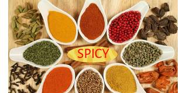
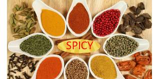

Announcement
Bangladesh has a rich culinary tradition that includes a wide variety of spices. Spices play a crucial role in Bangladeshi cuisine, adding depth, flavor, and aroma to dishes. Here are some popular spices used in Bangladeshi cooking

Bangladesh has a rich culinary tradition that includes a wide variety of spices. Spices play a crucial role in Bangladeshi cuisine, adding depth, flavor, and aroma to dishes. Here are some popular spices used in Bangladeshi cooking